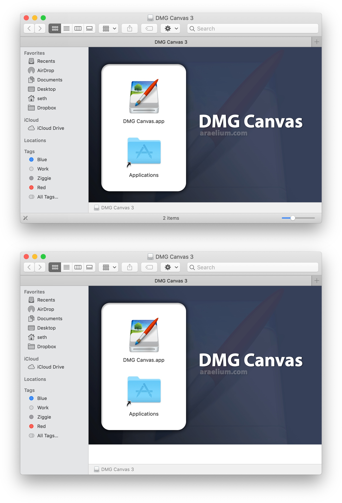

Finder Window Height
Finder Window Height
When the toolbar is visible in Finder windows, different versions of Finder treat the window height value differently. It also varies depending on the end user’s settings for whether the status bar and pathbar are visible in Finder windows. The same dmg can have a height difference by tens of pixels depending on the OS the dmg is mounted on. This makes it impossible for a window to have the same height for all users.
Therefore, it is recommended that you create your windows to not depend on a specific window height to look proper, and leave the toolbar/sidebar setting turned off. A best practice is to create a background image which is taller than the window height you set, so that if the window is resized slightly taller by Finder, more of the background image is exposed rather than an empty background.

In this image, the same disk image is mounted in two different versions of Finder. You can see how the window is taller in one than the other causing the bottom edge to be exposed.